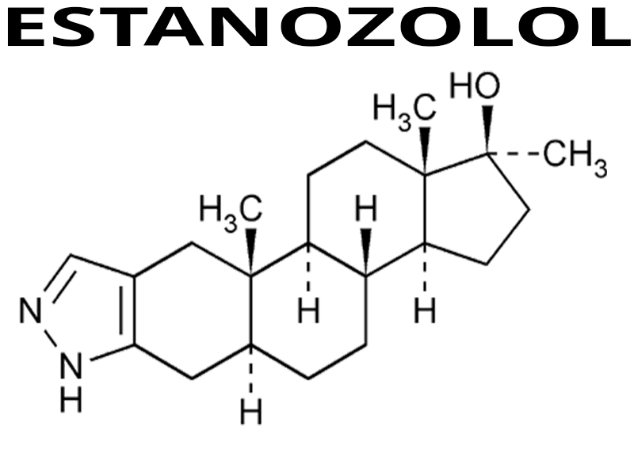

El estanozolol es un esteroide anabólico androgénico sintético derivado de la dihidrotestosterona (DHT), desarrollado originalmente con fines médicos para tratar ciertas condiciones relacionadas con pérdida de masa muscular, debilidad física y enfermedades hereditarias específicas. Es una de las sustancias más conocidas dentro del ámbito del culturismo y el rendimiento deportivo debido a su capacidad para mejorar la composición corporal sin generar una retención hídrica significativa.
Químicamente, el estanozolol es una modificación estructural de la DHT, diseñada para aumentar sus propiedades anabólicas y reducir parcialmente su actividad androgénica. Su estructura alterada le permite resistir mejor el metabolismo hepático, haciendo posible su administración oral, aunque también existe en formato inyectable.
A diferencia de otros esteroides como la testosterona, el estanozolol no aromatiza, lo que significa que no se convierte en estrógeno dentro del organismo. Esta característica influye directamente en sus efectos y en ciertos riesgos asociados a su uso.
El estanozolol fue desarrollado por la compañía farmacéutica Winthrop Laboratories y comercializado bajo el nombre de "Winstrol". Su uso clínico incluyó tratamientos para angioedema hereditario, recuperación de tejido muscular y ciertos cuadros de desgaste físico severo.
Con el paso de los años, su popularidad creció fuera del ámbito médico, especialmente en disciplinas deportivas donde la reducción de grasa corporal y la mejora de la apariencia física eran prioridades.
Dentro del culturismo, el estanozolol suele asociarse a etapas de definición muscular, ya que ayuda a conservar masa muscular mientras se reduce grasa corporal. Su reputación está ligada a la producción de un aspecto más seco, duro y vascularizado, en contraste con otros compuestos que producen mayor retención de líquidos.
Sin embargo, su popularidad en el ámbito recreativo también ha llevado a numerosos casos de uso indebido, abuso y exposición a efectos adversos significativos, especialmente cuando se consume sin supervisión médica.
Nombre químico: Estanozolol
Tipo: Esteroide anabólico androgénico
Familia: Derivado de la dihidrotestosterona (DHT)
Origen: Compuesto sintético
Fórmula molecular: C21H32N2O
Derivado de: Dihidrotestosterona (DHT)
Vía de administración: Oral e inyectable
Uso clínico original: Tratamiento del angioedema hereditario y preservación de masa muscular
Estado legal: Medicamento de prescripción médica
Clasificación deportiva: Sustancia prohibida en competición
Aromatización: No
Actividad progestagénica: No
Conversión a DHT: Ya es derivado de DHT
Hepatotoxicidad: Sí (especialmente vía oral)
Retención hídrica: Muy baja
Supresión hormonal: Moderada a alta
Impacto cardiovascular: Alto
Impacto hepático: Alto (oral)
Potencia anabólica: Alta
Potencia androgénica: Moderada

El estanozolol es un esteroide anabólico popular en etapas de definición muscular debido a su capacidad para mejorar la dureza, la vascularización y la preservación de masa muscular sin generar retención significativa de líquidos.
El estanozolol actúa uniéndose a los receptores androgénicos dentro de las células musculares, desencadenando una serie de procesos biológicos relacionados con la síntesis de proteínas, la retención de nitrógeno y la preservación de tejido muscular. Su acción genera un entorno anabólico que favorece el desarrollo físico y la mejora del rendimiento deportivo.
Uno de los principales efectos del estanozolol es el aumento de la síntesis proteica. Este proceso permite al cuerpo construir y reparar tejido muscular de manera más eficiente, acelerando la recuperación después del entrenamiento y favoreciendo el mantenimiento de masa muscular en períodos de déficit calórico.
La mejora en la síntesis proteica también contribuye a una recuperación muscular más rápida, permitiendo mayor frecuencia e intensidad de entrenamiento.
El balance de nitrógeno es un indicador importante del estado anabólico del organismo. El estanozolol favorece una mayor retención de nitrógeno en el tejido muscular, creando un ambiente más propicio para la construcción y preservación de masa magra.
Cuando el cuerpo mantiene un balance positivo de nitrógeno, la degradación muscular disminuye y la capacidad de recuperación mejora.
El uso de estanozolol suele estar asociado a incrementos de fuerza, potencia y resistencia muscular. Esto se debe a su influencia sobre la eficiencia neuromuscular y la capacidad del músculo para soportar mayores cargas de trabajo.
A diferencia de otros compuestos, este aumento de fuerza suele producirse sin un incremento importante del peso corporal debido a la baja retención de líquidos.
Una de las características más reconocidas del estanozolol es su capacidad para generar una apariencia muscular más seca y definida. Esto ocurre porque no aromatiza y no produce acumulación significativa de agua subcutánea.
Como resultado, la vascularización y la definición muscular suelen hacerse más visibles, especialmente en personas con bajos niveles de grasa corporal.
A diferencia de compuestos derivados de la testosterona, el estanozolol no se convierte en estrógeno mediante la enzima aromatasa. Esto reduce ciertos efectos secundarios relacionados con el exceso de estrógenos, como la retención hídrica o la ginecomastia inducida directamente por aromatización.
Sin embargo, esto no elimina otros riesgos hormonales o metabólicos asociados al uso.
El estanozolol puede estimular la producción de glóbulos rojos, mejorando el transporte de oxígeno hacia los músculos. Esto puede contribuir a una mejor resistencia física y recuperación durante actividades de alta intensidad.
Aunque este efecto puede mejorar el rendimiento, también puede aumentar la viscosidad sanguínea y generar riesgos cardiovasculares en ciertos casos.
Aunque el estanozolol es ampliamente conocido por sus efectos sobre la definición muscular y el rendimiento físico, su uso también está asociado a múltiples riesgos para la salud. Como ocurre con otros esteroides anabólicos androgénicos, sus efectos positivos suelen ir acompañados de alteraciones hormonales, metabólicas y orgánicas que pueden afectar tanto a corto como a largo plazo.
El estanozolol puede alterar el equilibrio hormonal del organismo al generar una reducción en la producción natural de testosterona. Esto ocurre porque el cuerpo detecta niveles elevados de andrógenos y disminuye su propia producción como mecanismo de regulación.
Esta supresión hormonal puede provocar síntomas como disminución de energía, cambios en la libido, fatiga y dificultades para mantener el equilibrio hormonal una vez suspendido su uso.
La versión oral del estanozolol presenta un impacto importante sobre el hígado debido a su modificación química para resistir el metabolismo hepático. Esto puede elevar enzimas hepáticas y aumentar el estrés sobre este órgano.
El uso prolongado o en altas cantidades incrementa la posibilidad de daño hepático y alteraciones en la función normal del hígado.
Uno de los riesgos más relevantes del estanozolol es su impacto negativo sobre el perfil lipídico. Puede reducir significativamente el colesterol HDL (colesterol "bueno") y aumentar el LDL (colesterol "malo"), favoreciendo condiciones que incrementan el riesgo cardiovascular.
Estas alteraciones pueden contribuir al desarrollo de hipertensión arterial, endurecimiento de arterias y otras complicaciones cardíacas.
Debido a la ausencia de retención de líquidos, muchas personas reportan molestias articulares durante el uso de estanozolol. La menor lubricación articular puede generar sensación de rigidez o dolor, especialmente bajo entrenamiento intenso.
Esto puede aumentar el riesgo de lesiones en articulaciones, tendones y ligamentos.
Como derivado de la DHT, el estanozolol puede acelerar procesos relacionados con la sensibilidad androgénica, como la caída del cabello en personas predispuestas genéticamente y la aparición o empeoramiento del acné.
Estos efectos varían según la genética individual y la sensibilidad hormonal de cada persona.
El uso de esteroides anabólicos puede influir en el estado emocional y psicológico, provocando irritabilidad, cambios bruscos de humor, impulsividad o aumento de agresividad en ciertos casos.
La intensidad de estos efectos depende de factores individuales y del contexto de uso.
En mujeres, el uso de estanozolol puede generar efectos de virilización debido a su actividad androgénica. Esto incluye cambios en la voz, alteraciones menstruales y aumento de vello corporal.
Algunos de estos cambios pueden ser difíciles de revertir incluso después de suspender la sustancia.
El estanozolol fue desarrollado originalmente con fines médicos y terapéuticos, pero con el tiempo su uso se expandió hacia ámbitos no médicos como el culturismo, el fitness y ciertos deportes competitivos. La diferencia entre ambos contextos es importante, ya que cambia tanto el objetivo como el nivel de exposición a riesgos.
En medicina, el estanozolol fue utilizado para tratar condiciones específicas donde era necesario preservar masa muscular, mejorar la recuperación física o tratar enfermedades relacionadas con la pérdida de tejido corporal.
Entre sus aplicaciones médicas históricas se encontraba el tratamiento del angioedema hereditario, una condición genética caracterizada por episodios de inflamación severa en diferentes partes del cuerpo.
En contexto clínico, el uso de este compuesto se realiza bajo supervisión médica, con controles periódicos y dosis ajustadas según las necesidades del paciente.
Fuera del ámbito médico, el estanozolol es utilizado principalmente con fines estéticos y de rendimiento físico. Su popularidad dentro del culturismo se debe a su capacidad para mejorar la apariencia muscular, aumentar la fuerza y ayudar a conservar masa magra durante etapas de definición.
También ha sido utilizado en disciplinas deportivas donde la velocidad, explosividad y fuerza tienen un papel importante.
En el uso clínico, el objetivo principal es mejorar o tratar una condición médica específica, buscando restaurar funciones corporales o mejorar la calidad de vida del paciente.
En el uso recreativo, el objetivo suele centrarse en mejorar el físico, acelerar resultados estéticos o potenciar el rendimiento deportivo más allá de los niveles fisiológicos naturales.
El uso médico incluye controles hormonales, análisis de sangre y seguimiento profesional para detectar posibles efectos adversos o alteraciones fisiológicas.
En el uso recreativo, muchas veces no existe este control, aumentando significativamente el riesgo de problemas hormonales, hepáticos y cardiovasculares.
El estanozolol está prohibido en la mayoría de competiciones deportivas profesionales debido a sus efectos sobre el rendimiento físico. Organizaciones antidopaje realizan controles específicos para detectar su presencia en atletas.
Uno de los casos más conocidos relacionados con esta sustancia fue el de atletas de alto rendimiento sancionados por su uso como agente de mejora física.
El estanozolol es una sustancia regulada en gran parte del mundo debido a sus efectos farmacológicos y a su potencial de uso indebido. Aunque tuvo aplicaciones médicas legítimas, su distribución y uso están sujetos a normativas estrictas que varían según el país y su legislación sanitaria.
En muchos países, el estanozolol solo puede obtenerse bajo prescripción médica o dentro de contextos clínicos específicos. Su venta, distribución o compra fuera de estos marcos puede considerarse ilegal y estar sujeta a sanciones legales.
Debido a su historial de uso en el deporte y el culturismo, es considerado una sustancia de control especial por organismos sanitarios y agencias antidopaje.
El estanozolol se encuentra incluido en la lista de sustancias prohibidas por organizaciones antidopaje internacionales. Su detección en controles deportivos puede derivar en sanciones, suspensiones o descalificaciones para atletas profesionales y amateurs.
Su uso en competiciones es considerado una forma de mejora artificial del rendimiento.
Una gran parte del estanozolol utilizado fuera del ámbito médico proviene de mercados informales o clandestinos, donde no existen garantías de calidad, pureza o condiciones adecuadas de fabricación.
Esto incrementa el riesgo de consumir productos falsificados, contaminados o con dosis incorrectas, generando peligros adicionales más allá de los propios efectos de la sustancia.
La adquisición de productos de origen desconocido puede implicar problemas como falta de esterilidad en productos inyectables, presencia de compuestos no declarados o sustancias adulteradas que pueden provocar reacciones adversas graves.
La ausencia de controles de calidad convierte la procedencia en un factor crítico de riesgo.
El control legal de este tipo de sustancias busca reducir riesgos sanitarios, prevenir el abuso y proteger la salud pública. El uso sin supervisión profesional aumenta la exposición a complicaciones médicas y dificulta una intervención temprana ante efectos adversos.
Aunque el estanozolol puede ofrecer mejoras visibles en la composición corporal y el rendimiento físico, existen alternativas naturales y sostenibles que permiten progresar de forma segura, estable y con menor riesgo para la salud. La construcción de un físico sólido y funcional no depende únicamente de sustancias externas, sino de hábitos consistentes mantenidos en el tiempo.
El cuerpo humano produce testosterona y otras hormonas fundamentales para el desarrollo muscular de forma natural. Factores como el descanso adecuado, la alimentación equilibrada y la actividad física regular influyen directamente en la optimización de este entorno hormonal.
Dormir correctamente, reducir el estrés y mantener un estilo de vida activo son pilares fundamentales para sostener niveles hormonales saludables.
Una alimentación adecuada es uno de los factores más importantes para la mejora física. Consumir suficiente proteína, carbohidratos de calidad y grasas saludables permite al cuerpo recuperarse, crecer y rendir mejor durante el entrenamiento.
Nutrientes como zinc, magnesio, vitamina D y ácidos grasos esenciales cumplen un rol importante en la función hormonal y la recuperación muscular.
El progreso físico sostenible depende de un entrenamiento bien estructurado. Aplicar principios como sobrecarga progresiva, buena técnica y recuperación adecuada permite ganar fuerza y masa muscular de forma consistente.
La paciencia y la disciplina suelen producir resultados más duraderos que los métodos rápidos.
Existen suplementos legales y ampliamente estudiados que pueden complementar el progreso físico sin alterar de forma agresiva el sistema hormonal. Entre ellos destacan la creatina, proteína en polvo y cafeína, utilizados como herramientas de apoyo dentro de una planificación adecuada.
Estos recursos no reemplazan la base del progreso, pero pueden potenciarla de forma segura.
Los resultados físicos sostenibles suelen construirse a lo largo de meses y años, no de semanas. Priorizar la salud, la constancia y el aprendizaje permite desarrollar un físico fuerte y funcional minimizando riesgos innecesarios.
El desarrollo físico inteligente no consiste únicamente en verse mejor, sino en mantener un cuerpo sano, fuerte y capaz de sostener ese progreso con el paso del tiempo.
El estanozolol es una sustancia con efectos reales sobre el físico y el rendimiento, pero también con riesgos importantes que deben entenderse antes de considerar su uso. Informarse correctamente y valorar alternativas más seguras es fundamental para tomar decisiones responsables y sostenibles.
Aunque el estanozolol puede ofrecer mejoras visibles en la composición corporal y el rendimiento físico, existen alternativas naturales y sostenibles que permiten progresar de forma segura, estable y con menor riesgo para la salud. La construcción de un físico sólido y funcional no depende únicamente de sustancias externas, sino de hábitos consistentes mantenidos en el tiempo.
El cuerpo humano produce testosterona y otras hormonas fundamentales para el desarrollo muscular de forma natural. Factores como el descanso adecuado, la alimentación equilibrada y la actividad física regular influyen directamente en la optimización de este entorno hormonal.
Dormir correctamente, reducir el estrés y mantener un estilo de vida activo son pilares fundamentales para sostener niveles hormonales saludables.
Una alimentación adecuada es uno de los factores más importantes para la mejora física. Consumir suficiente proteína, carbohidratos de calidad y grasas saludables permite al cuerpo recuperarse, crecer y rendir mejor durante el entrenamiento.
Nutrientes como zinc, magnesio, vitamina D y ácidos grasos esenciales cumplen un rol importante en la función hormonal y la recuperación muscular.
El progreso físico sostenible depende de un entrenamiento bien estructurado. Aplicar principios como sobrecarga progresiva, buena técnica y recuperación adecuada permite ganar fuerza y masa muscular de forma consistente.
La paciencia y la disciplina suelen producir resultados más duraderos que los métodos rápidos.
Existen suplementos legales y ampliamente estudiados que pueden complementar el progreso físico sin alterar de forma agresiva el sistema hormonal. Entre ellos destacan la creatina, proteína en polvo y cafeína, utilizados como herramientas de apoyo dentro de una planificación adecuada.
Estos recursos no reemplazan la base del progreso, pero pueden potenciarla de forma segura.
Los resultados físicos sostenibles suelen construirse a lo largo de meses y años, no de semanas. Priorizar la salud, la constancia y el aprendizaje permite desarrollar un físico fuerte y funcional minimizando riesgos innecesarios.
El desarrollo físico inteligente no consiste únicamente en verse mejor, sino en mantener un cuerpo sano, fuerte y capaz de sostener ese progreso con el paso del tiempo.
El estanozolol es una sustancia con efectos reales sobre el físico y el rendimiento, pero también con riesgos importantes que deben entenderse antes de considerar su uso. Informarse correctamente y valorar alternativas más seguras es fundamental para tomar decisiones responsables y sostenibles.